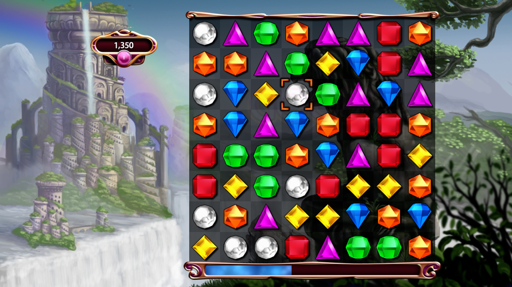
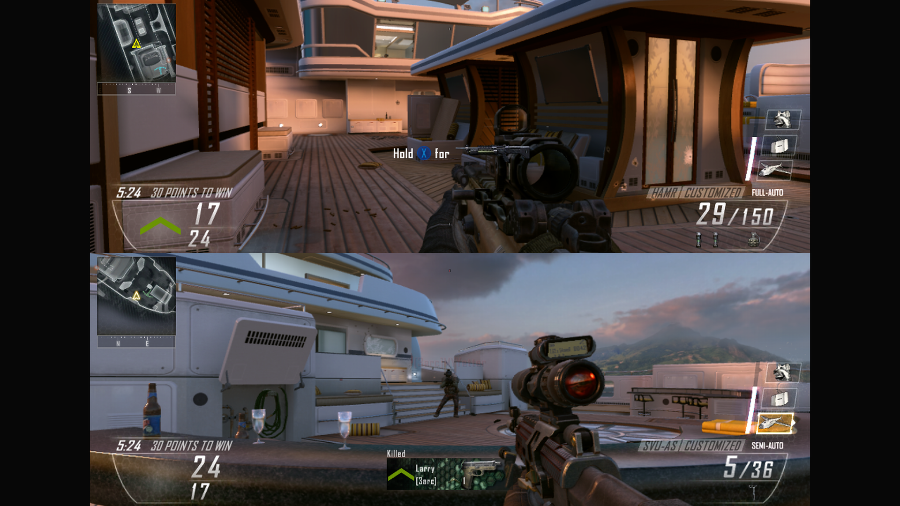
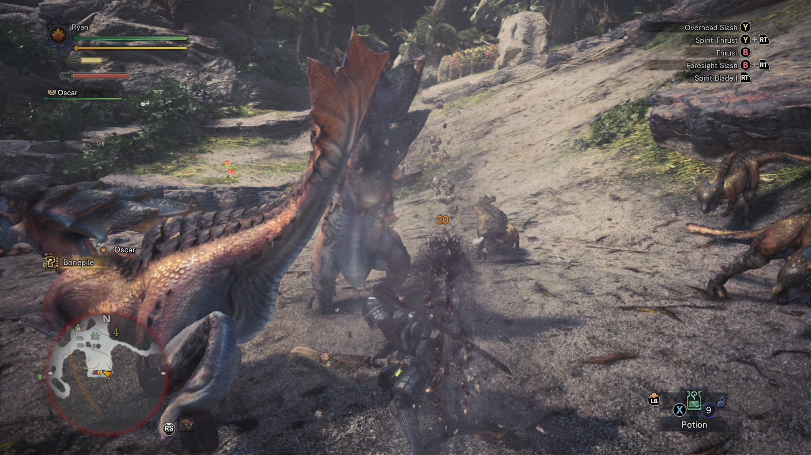

The first game I played this week was Bejeweled 3, which is an evolution of the series but, other than a few new game modes and some nicer graphics, it felt basically the same as previous games. With games like this, I will often find myself getting really into them a couple of days until I burn out, and Bejeweled is no exception. I was able to play it a couple hours for two days in a row, then I lost all of my motivation to play it at all. It is a fun game when you want to do something slightly more involving than watching TV, but not much more than that. I've come back to it a couple of times in the past for basically the same amount of time. That being said, for a puzzle game, the Bejeweled gameplay is classic. It is a very simple formula whose depth doesn’t really go too much more beyond what you see at face value. However, this means that it is really easy to pick up and put down. The Bejeweled was the first game made by PopCap Games, which was a huge publisher of "casual" games in the 2000s. Most of their library followed a similar formula of taking a couple simple mechanics and making a smooth looking game out of them. All in all, Bejeweled is a pretty fun time killer but not necessarily worth a huge investment of time in these days.

The second game that I played was Call of Duty Black Ops II. I have less history with the Call of Duty franchise than most, but I did happen to get this version when I first got my Xbox 360. I played a couple of rounds with my brother/roommate who did manage to beat me every time. Personally, I do not really enjoy the format too much, but I also don’t think I am really the target audience for the game(regardless of the fact that half the series is on the list of best selling games of all time). I would say that people in middle school and high school probably have a lot more free time than me to put into a multiplayer focused game with an odd learning curve. It expects you to learn a lot of things up front but then not too much beyond that. That being said, it does fit the niche of a fast paced game to play split screen with friends, and that niche is very important to me. A lot of my favorite gaming experiences have taken place on the couch with friends, and I think this is important. For that reason, I will say that the Call of Duty games are good if you value local multiplayer and will be playing it a lot, but if you don’t, you can probably give it a pass.

The final game I played was Monster Hunter World. The Monster Hunter series has been a lot less popular in the US than it is in Japan. However, it still has somewhat of a following, and I think that gameplay is interesting. It is basically an action role playing game in which each "level" consists of you selecting a huge monster to hunt then going on a 50 minute quest to kill it. You can do this with up to three other people at a time, which can add a lot of diversity to the gameplay - the more people you add, the stronger the monster is, but also the more strategy options you have. It is not just a straightforward fight either; you have to track down the monster and find its weaknesses, it can run away or start fights with other monsters as you are hunting it down. It is a very unique experience that I definitely recommend, especially now because World just came out, and the online community is still very active.

Motion Control Games
I think that these kinds of games are really interesting. I find that the reason I enjoy them is the ease of play for those that are not gaming savvy. Someone who has never played with an Xbox controller before has a lot more of a learning curve for that then they would if they wanted to pick up a Wiimote and play Wii Sports, because the motion controls are more direct analogues to their real world activities than a traditional controller is. Thus, I do enjoy playing them with friends and family in different situations. However, I do prefer old fashioned gaming. There is one big flaw with motion controllers, and that is feedback. In the Wii Sports Resort sword fighting game, when your sword hits the other players, it vibrates your controller. In the real world, my sword would have bounced off towards me. Because the controller does not provide this realistic feedback, it limits the experiences. In addition, it is just more possible do more complicated things easier on a traditional controller than a motion one, like something as simple as a menu. I also feel like in my own experience, all of the games that have the most depth have not been motion controlled. It is hard to have a motion controlled system without focusing the whole game on it. It feels forced when a game has motion controls that are not directly analogous to the systems in the game. If you think about the classic platformer, one of the most long lasting genres, and try and put in motion controls, how could they not feel forced? Mechanics like jumping and shooting do not translate well to a Wiimote. In Virtual Reality, the issues are much the same. I think it is really cool to try, but ultimately it suffers from the same two restrictions as motion controls - no physical feedback, and a limitation to things that the human can actually do. I like the idea of Augmented Reality more, but not really in terms of gaming. I think that augmented reality could be huge in lots of real life tasks, like driving or shopping. However, I go to my games because they are not reality. I'd rather not play a game overlaid on my reality thanks.